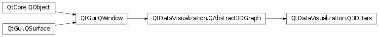

QtDataVisualization.Q3DBars¶
Synopsis¶
Functions¶
- def
addAxis(axis) - def
addSeries(series) - def
axes() - def
barSpacing() - def
barThickness() - def
columnAxis() - def
floorLevel() - def
insertSeries(index, series) - def
isBarSpacingRelative() - def
isMultiSeriesUniform() - def
primarySeries() - def
releaseAxis(axis) - def
removeSeries(series) - def
rowAxis() - def
selectedSeries() - def
seriesList() - def
setBarSpacing(spacing) - def
setBarSpacingRelative(relative) - def
setBarThickness(thicknessRatio) - def
setColumnAxis(axis) - def
setFloorLevel(level) - def
setMultiSeriesUniform(uniform) - def
setPrimarySeries(series) - def
setRowAxis(axis) - def
setValueAxis(axis) - def
valueAxis()
Signals¶
- def
barSpacingChanged(spacing) - def
barSpacingRelativeChanged(relative) - def
barThicknessChanged(thicknessRatio) - def
columnAxisChanged(axis) - def
floorLevelChanged(level) - def
multiSeriesUniformChanged(uniform) - def
primarySeriesChanged(series) - def
rowAxisChanged(axis) - def
selectedSeriesChanged(series) - def
valueAxisChanged(axis)
Detailed Description¶
-
class
PySide2.QtDataVisualization.QtDataVisualization.Q3DBars([format=nullptr[, parent=nullptr]])¶ Parameters: - format –
PySide2.QtGui.QSurfaceFormat - parent –
PySide2.QtGui.QWindow
- format –
-
PySide2.QtDataVisualization.QtDataVisualization.Q3DBars.addAxis(axis)¶ Parameters: axis – PySide2.QtDataVisualization.QtDataVisualization::QAbstract3DAxis
-
PySide2.QtDataVisualization.QtDataVisualization.Q3DBars.addSeries(series)¶ Parameters: series – PySide2.QtDataVisualization.QtDataVisualization::QBar3DSeries
-
PySide2.QtDataVisualization.QtDataVisualization.Q3DBars.axes()¶ Return type:
-
PySide2.QtDataVisualization.QtDataVisualization.Q3DBars.barSpacing()¶ Return type: PySide2.QtCore.QSizeF
-
PySide2.QtDataVisualization.QtDataVisualization.Q3DBars.barSpacingChanged(spacing)¶ Parameters: spacing – PySide2.QtCore.QSizeF
-
PySide2.QtDataVisualization.QtDataVisualization.Q3DBars.barSpacingRelativeChanged(relative)¶ Parameters: relative – PySide2.QtCore.bool
-
PySide2.QtDataVisualization.QtDataVisualization.Q3DBars.barThickness()¶ Return type: PySide2.QtCore.float
-
PySide2.QtDataVisualization.QtDataVisualization.Q3DBars.barThicknessChanged(thicknessRatio)¶ Parameters: thicknessRatio – PySide2.QtCore.float
-
PySide2.QtDataVisualization.QtDataVisualization.Q3DBars.columnAxis()¶ Return type: PySide2.QtDataVisualization.QtDataVisualization::QCategory3DAxis
-
PySide2.QtDataVisualization.QtDataVisualization.Q3DBars.columnAxisChanged(axis)¶ Parameters: axis – PySide2.QtDataVisualization.QtDataVisualization::QCategory3DAxis
-
PySide2.QtDataVisualization.QtDataVisualization.Q3DBars.floorLevel()¶ Return type: PySide2.QtCore.float
-
PySide2.QtDataVisualization.QtDataVisualization.Q3DBars.floorLevelChanged(level)¶ Parameters: level – PySide2.QtCore.float
-
PySide2.QtDataVisualization.QtDataVisualization.Q3DBars.insertSeries(index, series)¶ Parameters: - index –
PySide2.QtCore.int - series –
PySide2.QtDataVisualization.QtDataVisualization::QBar3DSeries
- index –
-
PySide2.QtDataVisualization.QtDataVisualization.Q3DBars.isBarSpacingRelative()¶ Return type: PySide2.QtCore.bool
-
PySide2.QtDataVisualization.QtDataVisualization.Q3DBars.isMultiSeriesUniform()¶ Return type: PySide2.QtCore.bool
-
PySide2.QtDataVisualization.QtDataVisualization.Q3DBars.multiSeriesUniformChanged(uniform)¶ Parameters: uniform – PySide2.QtCore.bool
-
PySide2.QtDataVisualization.QtDataVisualization.Q3DBars.primarySeries()¶ Return type: PySide2.QtDataVisualization.QtDataVisualization::QBar3DSeries
-
PySide2.QtDataVisualization.QtDataVisualization.Q3DBars.primarySeriesChanged(series)¶ Parameters: series – PySide2.QtDataVisualization.QtDataVisualization::QBar3DSeries
-
PySide2.QtDataVisualization.QtDataVisualization.Q3DBars.releaseAxis(axis)¶ Parameters: axis – PySide2.QtDataVisualization.QtDataVisualization::QAbstract3DAxis
-
PySide2.QtDataVisualization.QtDataVisualization.Q3DBars.removeSeries(series)¶ Parameters: series – PySide2.QtDataVisualization.QtDataVisualization::QBar3DSeries
-
PySide2.QtDataVisualization.QtDataVisualization.Q3DBars.rowAxis()¶ Return type: PySide2.QtDataVisualization.QtDataVisualization::QCategory3DAxis
-
PySide2.QtDataVisualization.QtDataVisualization.Q3DBars.rowAxisChanged(axis)¶ Parameters: axis – PySide2.QtDataVisualization.QtDataVisualization::QCategory3DAxis
-
PySide2.QtDataVisualization.QtDataVisualization.Q3DBars.selectedSeries()¶ Return type: PySide2.QtDataVisualization.QtDataVisualization::QBar3DSeries
-
PySide2.QtDataVisualization.QtDataVisualization.Q3DBars.selectedSeriesChanged(series)¶ Parameters: series – PySide2.QtDataVisualization.QtDataVisualization::QBar3DSeries
-
PySide2.QtDataVisualization.QtDataVisualization.Q3DBars.seriesList()¶ Return type:
-
PySide2.QtDataVisualization.QtDataVisualization.Q3DBars.setBarSpacing(spacing)¶ Parameters: spacing – PySide2.QtCore.QSizeF
-
PySide2.QtDataVisualization.QtDataVisualization.Q3DBars.setBarSpacingRelative(relative)¶ Parameters: relative – PySide2.QtCore.bool
-
PySide2.QtDataVisualization.QtDataVisualization.Q3DBars.setBarThickness(thicknessRatio)¶ Parameters: thicknessRatio – PySide2.QtCore.float
-
PySide2.QtDataVisualization.QtDataVisualization.Q3DBars.setColumnAxis(axis)¶ Parameters: axis – PySide2.QtDataVisualization.QtDataVisualization::QCategory3DAxis
-
PySide2.QtDataVisualization.QtDataVisualization.Q3DBars.setFloorLevel(level)¶ Parameters: level – PySide2.QtCore.float
-
PySide2.QtDataVisualization.QtDataVisualization.Q3DBars.setMultiSeriesUniform(uniform)¶ Parameters: uniform – PySide2.QtCore.bool
-
PySide2.QtDataVisualization.QtDataVisualization.Q3DBars.setPrimarySeries(series)¶ Parameters: series – PySide2.QtDataVisualization.QtDataVisualization::QBar3DSeries
-
PySide2.QtDataVisualization.QtDataVisualization.Q3DBars.setRowAxis(axis)¶ Parameters: axis – PySide2.QtDataVisualization.QtDataVisualization::QCategory3DAxis
-
PySide2.QtDataVisualization.QtDataVisualization.Q3DBars.setValueAxis(axis)¶ Parameters: axis – PySide2.QtDataVisualization.QtDataVisualization::QValue3DAxis
-
PySide2.QtDataVisualization.QtDataVisualization.Q3DBars.valueAxis()¶ Return type: PySide2.QtDataVisualization.QtDataVisualization::QValue3DAxis
-
PySide2.QtDataVisualization.QtDataVisualization.Q3DBars.valueAxisChanged(axis)¶ Parameters: axis – PySide2.QtDataVisualization.QtDataVisualization::QValue3DAxis
© 2018 The Qt Company Ltd. Documentation contributions included herein are the copyrights of their respective owners. The documentation provided herein is licensed under the terms of the GNU Free Documentation License version 1.3 as published by the Free Software Foundation. Qt and respective logos are trademarks of The Qt Company Ltd. in Finland and/or other countries worldwide. All other trademarks are property of their respective owners.